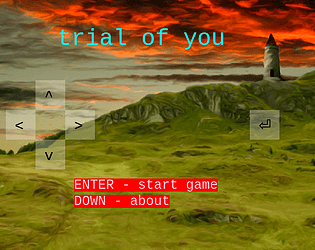

description
game takes a moment to load the first time, wait a sec and dont be a hasty goof 💕
when your wizard teacher kicks you out of their tower for no apparent reason, you set out on a quest to find your destiny. embark on an epic coming-of-age journey thats stupid and lasts like 15mins.
controls
arrow keys + enter, or you can use numpad i guess
credits
tilesets:
- tiny rpg town by ansimuz on itch
- open RPG tileset by finalbossblues on itch
- overworld grass biome by Beast Pixels on itch
- character pack (free version) by Gif (twitter: @gif_not_jif), Noiracide (twitter: @Noiracide), Romi (twitter: @DessRomaric) on itch
music:
- grasslands by SubspaceAudio on openGameArt
- town theme by cynicmusic on openGameArt
- a new town by cynicmusic on openGameArt
- dark forest theme by cynicmusic on openGameArt
- calm theme by me (peb) on openGameArt
images:
- wizard tower by JAP on openGameArt
reviews
- good shitpost games are extremely precious and this one is magnificent
- but how many leaves were there?